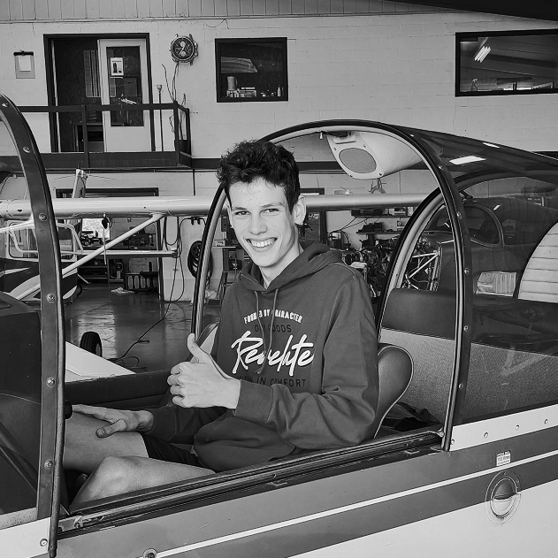

I'm currently studying Computer Graphics at Haute École Albert Jacquard. With a background in automation and a passion for UI/UX, I enjoy working on a wide range of digital projects, from frontend development to design thinking. I focus on attention to details, always meet deadlines, and love experimenting with new tools and ideas. I'm also a licensed drone pilot and I like to bring my personal touch to every project I take on. Feel free to reach out if you’d like to collaborate or just say hi!
